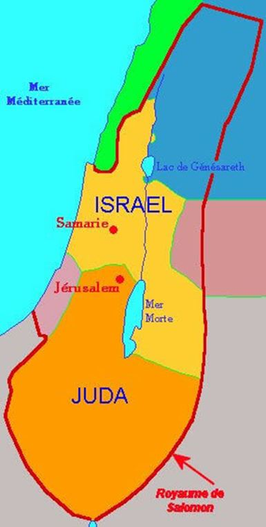

Les israélites ne sont donc pas issus de la famille d’Abraham à qui Dieu aurait conjointement promis une descendance et une terre. L’Archéologie moderne a pu repérer sur la terre de la Bible les différentes étapes de son occupation progressive qui n’ont strictement rien à voir avec une conquête venue d’Egypte.
La terre de la Bible a été fouillée dans les couches archéologiques les plus anciennes et bien des choses ont été trouvées. Par convention toutefois, on appelle premiers israélites ceux qui se sont définitivement installés dans les hautes terres au moment de la chute de la culture cananéenne, vers 1200 avant notre ère.
Fouilles archéologiques à Ramla (Israël)
« Nous savons aujourd’hui que la première occupation des hautes terres s’est déroulée au bronze ancien et qu’elle débuta environ deux mille ans avant l’avènement d’Israël, vers 3500 avant JC. À l’apogée de cette vague d’occupation, on comptait presque une centaine de cités et de villages légèrement plus peuplés dispersés le long de la crête centrale. Un peu plus tard, vers l’an 2200 avant JC., la plupart de ces sites furent abandonnés et les hautes terres redevinrent une zone inhabitée. Une deuxième vague d’occupation, plus dense que la précédente, s’effectua au bronze moyen, peu après 2000 avant JC. Cette vague débuta avec l’établissement de petits hameaux dispersés, qui se transformèrent graduellement en un réseau complexe de quelque deux cent sites, allant du hameau à la ville, voire parfois à des centres régionaux fortifiés. On a estimé la population de cette deuxième vague d’occupation à quarante mille habitants. Les plus grosses places fortes de l’époque - Hébron, Jérusalem, Béthel, Silo et Sichem - allaient devenir des centres importants à l’époque israélite. Mais cette deuxième vague d’occupation était elle aussi destinée à disparaître, vers le seizième siècle. Cette fois-ci, les hautes terres vont demeurer une zone frontalière, quasiment déserte, pendant quatre siècles.
Accroupi dans ce qui était autrefois une chambre mortuaire, un archéologue américain, pinceau à la main, extrait délicatement de la terre sableuse le squelette intact d’une Philistine, enterrée avec une fiole de parfum en terre cuite, aujourd’hui soudée au reste de son crâne
Finalement, vers l’an 1200 avant JC., commença la troisième vague d’occupation, celle des premiers israélites. À l’image des précédentes, elle débuta par la formation de petites communautés rurales, regroupant une population initiale d’un total d’environ quarante-cinq mille individus, répartis sur deux cent cinquante sites. Elle se développa graduellement en un système intégré de grandes cités, de bourgades de dimension moyenne et de petits villages. À l’apogée de cette période d’occupation, au huitième siècle avant JC., à la suite de la fondation des royaumes d’Israël et de Juda, elle comprenait plus de cinq cent sites abritant une population d’environ cent soixante mille personnes ».
Les israélites sont donc des pasteurs nomades devenus sédentaires. On a longtemps pensé que ces nomades étaient des cananéens eux-mêmes venus des basses terres pour des raisons diverses, impôts trop lourds, prescription dans l’armée, etc.
Pour le bibliste américain George Mendenhall puis pour le sociologue, américain lui aussi, Norman Gottwald, qui ont défendu cette thèse, les israélites des hautes terres venaient des basses terres, et le tour était joué. D’autant plus que le douzième siècle est celui de l’effondrement du système politique cananéen, il était donc légitime d’imaginer que cette population se retrouvât dans les hautes terres.
Le squelette d'un soldat cananéen découvert à Sidon (Saïda) qui remonte à 1800 avant J.C.Il était donc possible d’imaginer qu’à des périodes différentes, le même phénomène s’était reproduit.
Des familles ou des petits clans avaient quittés la vallée et s’étaient installés dans les hautes terres pour un temps, revenant dans la vallée lorsque les conditions s’amélioraient. Bonne hypothèse, mais rien n’est moins sûr…
Les vestiges archéologiques montrent une différence radicale dans la culture des cananéens et celle des habitants des hautes terres, qu’il s’agisse de l’habitat, de la poterie, des mœurs et du reste, tout différencie les cananéens de la vallée et les habitants des hautes terres, qui semblent du reste bien en retard sur leurs voisins d’en bas.
Pas de bijoux, pas de bâtiments administratifs, rien qui dénote une culture installée.
Si les habitants des hautes terres avaient été des évadés de la plaine, ils auraient évidemment emportés avec eux leurs poteries, leurs vêtements et leur manière de construire leurs maisons !
Les fouilles archéologiques se poursuivant, on fit alors une découverte étonnante. Les périodes intermédiaires du bronze moyen au bronze récent supposément vides ne l’avaient pas été, seul le mode de vie avait changé. Ce ne sont plus des tessons qui ont révélé le pot aux roses mais les ossements d’animaux. Lors des périodes habitées, les ossements d’animaux sont ceux de bétail, et lors des périodes soi-disant inhabitées, les ossements de bétail disparaissent mais sont remplacés par une quantité considérable d’ossements de chèvres et de moutons ; typique de « la composition des troupeaux de bédouins ». Ce qui signifie que les hautes terres n’avaient pas été désertées comme on l’avait cru d’abord mais avaient tout simplement laissé tomber leur mode de vie sédentaire. Le mode de vie nomade générant moins de traces qu’une occupation sédentaire, on a cru que les hautes terres avaient été abandonnées, il n’en était rien.
Les pasteurs nomades des hautes terres ont donc vraisemblablement toujours été là depuis le bronze ancien au moins et ont alterné leur mode de vie en fonction de la possibilité qu’ils avaient ou non de se ravitailler en céréales auprès des cananéens de la vallée, ce qui ne fut pas toujours possible. À ce moment-là, ils cultivaient eux-mêmes leurs céréales et devenaient sédentaires. Cette sédentarité devint définitive vers 1200 avant JC lorsque le système politique cananéen s’effondrant - et non pas sous les coups de l’armée de Josué - les structures sociales et commerciales firent de même, les israélites qui ne pouvaient plus espérer de ravitaillement en provenance du bas se sont alors définitivement sédentarisés dans les hautes terres. Se développant, les royaumes d’Israël, au nord, et de Juda, au sud firent leur apparition, prospérèrent, mais pas au même moment.
Le royaume du nord prospéra plus vite. La dynastie Omride s’y employa. Le mariage d’Achab et de Jézabel la phénicienne y contribua, permit une ouverture commerciale sans précédent, jusqu’au moment où le puissant voisin assyrien décida de venir piller le royaume et de s’en octroyer les richesses.
Là aussi, contrairement au texte sacré, il ressort des études de toutes sortes, côté hébreu comme assyro-babylonien, que Jézabel ne fut pas la catin que l’on dit. On comprendra plus tard pourquoi elle dut supporter cette réputation si longtemps. Pendant ce temps-là, le royaume du sud vivotait et ne risquait pas d’intéresser les assyriens ou qui que ce soit d’autre. En fait, ce n’est qu’à partir du moment où le royaume du nord fut dévasté que celui du sud pris en quelque sorte son essor.
Les israélites ne sont donc pas les descendants d’un mythique mésopotamien, réduits en esclavage par pharaon, libérés par Moïse, guidés par ce même Moïse jusqu’en terre promise, où Josué, prenant le relais, conquis toutes les villes cananéennes. Les israélites ont toujours été des cananéens des hautes terres, ont par conséquent toujours habités sur la terre de la Bible et n’ont conquis Canaan que grâce à l’effondrement de celle-ci, dans lequel les israélites ne sont pour rien. « Le processus que nous décrivons ici est à l’opposé de celui que décrit la Bible : l’émergence d’Israël fut le résultat, non la cause, de l’effondrement de la culture cananéenne. La plupart des israélites ne venaient pas de l’extérieur de Canaan ; ils étaient indigènes. Il n’y a pas eu d’exode de masse en provenance de l’Egypte. Le pays de Canaan n’a pas été conquis par la violence. La plupart de ceux qui ont constitué le premier noyau d’Israël étaient des gens du cru, ceux-là mêmes qui peuplaient les hautes terres durant les âges du bronze et du fer. Les premiers israélites étaient - comble de l’ironie - d’origine cananéenne ! »
Nous avons donc répondu à la première question, nous savons maintenant d’où proviennent les israélites. Répondons à la deuxième, qui a écrit cette saga ?
6/ LE CANULAR DU ROI JOSIAS
Lorsque le roi Josias accède au pouvoir en 639 avant notre ère, il est pris d’une envie territoriale sans précédent, reproduire en mieux le mythique royaume de David et Salomon qui couvrait prétendument tout le territoire. Pour trouver une légitimité à sa volonté d’Hégémonie territoriale et de pouvoir sur les consciences, il va faire comme tous les chefs politiques peu scrupuleux, il va mentir à son peuple, lui monter un canular grotesque, mais qui va marcher. Il va ordonner au grand prêtre Hilqiyyahu de prélever des fonds sur le trésor public pour effectuer une rénovation du temple. Lors des travaux, en 622, un mystérieux texte sera soit disant trouvé par hasard, un livre de la loi remontant à l’époque du roi David. Ce texte donnant des indications pour une vie pieuse en accord avec l’alliance, Josias se servira de son contenu pour entamer une réforme religieuse que l’on peut qualifier d’intégriste. Inventer la saga biblique permettra de fonder le canular et de donner une assise « historique » à ce texte pour le moins curieux.
On sait aujourd’hui que ce texte ne peut être de l’époque davidique. Le style, les mots ainsi que le contenu désignent à l’évidence le siècle de Josias.
Pour rester dans les grandes lignes de la saga inventée par Josias et ses sbires, celle-ci va être placée sous l’entier parrainage de Yahvé et expliquer qu’à chaque fois que le peuple des hébreux a respecté la loi, il a prospéré, et que dans le cas contraire, il a périclité. Josias va donc tout inventer. À partir de l’affaire des hyksos, il invente l’aventure de Moïse et les événements fantastiques qui l’accompagnent, il invente aussi Josué et fait croire aux israélites du septième siècle que leurs ancêtres ont conquis Canaan comme qui rigole puisque aidés par Yahvé, il les fait fantasmer sur le royaume légendaire de David et Salomon, il fustige en permanence le royaume du nord qui, selon lui, s’est vautré dans la fange - Achab et Jézabel en tête - et il attribue la chute du royaume d’Israël à cette impiété et non aux assyriens. Pour être plus précis, c’est Dieu qui a, en quelque sorte, demandé aux assyriens de punir son propre peuple, ou qu’il les a laissés faire exprès en guise de punition.
Et par conséquent, tout naturellement si l’on peut dire, si on poursuit la logique de l’histoire le peuple hébreu est voué à conquérir cette terre avec l’aide de Dieu sous le règne du roi Josias - que le texte encense comme aucun autre roi d’Israël ou de Juda - à unifier le royaume de Juda au sud et celui d’Israël au nord, à devenir ce grand état panisraélite élu de Yahvé, et administré de main de maître depuis Jérusalem, image s’il en est du fabuleux âge d’or de David et Salomon, à condition bien sûr que les mœurs changent et que la loi de Dieu ne soit plus bafouée.
Le mystérieux livre de la loi permet donc à Josias de réformer le culte. L’intégrisme est radical, destruction de tous les édifices religieux non dévolus à Yahvé, interdiction à d’autres religions d’exister, obligation de venir fêter la Pâque à Jérusalem et bien d’autres réjouissances.
Comme de bien entendu, les choses se déroulèrent autrement. Fomenter un projet de cette envergure sans que les voisins égyptiens y trouvent à redire était une folie.
Le plan de Josias fonctionna tant que les égyptiens restèrent confinés dans les basses terres de Canaan. Josias crut peut-être par cette tranquillité qu’il lui serait possible d’aller plus loin dans la conquête territoriale. Descendant direct de David et de Salomon, il a peut-être lui aussi fantasmé sur la protection de Yahvé. Toujours est-il que les figurines retrouvées sur le territoire montrent que cette réforme religieuse, bien que violente et radicale, n’avait pas éradiqué tous les vieux mythes idolâtres. Quant à Josias, la première confrontation avec les égyptiens fut la bonne, ad patres illico presto ! Et donc tout ça pour rien, ou presque.
***
En bonne logique il faut se demander pourquoi une telle saga, si elle est fictive de part en part, a pu faire croire à sa véracité historique pendant si longtemps.
Le canular avait été si bien monté, le rôle quasi messianique de Josias était si bien passé qu’au lieu d’envoyer cette histoire aux oubliettes à partir de la défaite du roi devant les égyptiens, elle servit de base à la suite. Et donc, concernant Josias, il est dit qu’il a bien été très pieux mais que son peuple l’avait si peu été que ça n’avait pas suffi, raison pour laquelle le projet avait échoué. Pour la suite, globalement, les prophètes annoncent le bien à ceux qui respectent la loi de Dieu, le mal aux apostats et c’est ce qui arrive, destruction du temple, exil à Babylone puis retour, occupation perse pendant deux siècles, etc. Le texte est fabriqué selon la façon habituelle, quelque chose d’historique ou non dans le lointain, mais surtout l’affirmation du caractère spécifique du peuple d’Israël, élu de Dieu et qui, s’il respecte les préceptes, obtiendra le salut promis à Abraham et David.
Après la mort d’Alexandre le grand, qui avait mis fin à la domination perse dans la province de Yehoud, l’auteur grec Hécatée d’Abdère parcourt le territoire et recense pour la première fois l’ensemble des lois et coutumes du peuple juif. Hécatée d’Abdère ne tarit pas d’éloges devant ce peuple qu’il juge sage et pieux et semble croire à la fiction concoctée par Josias. Les juifs commencent à être renommés dans le monde méditerranéen comme une communauté soudée autour de son Dieu, « au cœur de cette identité, se trouvaient non seulement les lois et les règles qui régissent le sacrifice, mais aussi la saga historique qui débuta par l’appel entendu par Abraham, dans la lointaine Ur, et qui se terminait par la restauration de la communauté du temple grâce aux efforts d’Esdras et de Néhémie, dans la période postexilique.
Avec l’abandon de la monarchie et la dispersion des juifs à travers le monde gréco romain, le texte sacré de la Bible hébraïque, traduit petit à petit en grec, pendant les troisième et deuxième siècle avant JC, devint la source principale d’inspiration pour tous les membres de la maison d’Israël qui vivaient au-delà du voisinage immédiat du temple de Jérusalem. L’épopée de l’Exode et de la conquête de la terre promise proposaient à tous les membres de la communauté une vision de solidarité et d’espoir que d’autres mythologies, royales ou héroïques, n’auraient su leur offrir…Pour résumer, la saga d’Israël, qui s’est cristallisée pour la première fois au temps du roi Josias, devint la première anthologie nationale et sociale qui s’adressait aussi bien aux hommes, aux femmes, aux enfants, aux riches, aux pauvres et aux exclus de toute communauté ».
C’est la raison de son succès et de sa pérennité, cette saga parle au peuple, du peuple, elle parle d’un peuple et non pas seulement de rois et de dieux.
Et le tour est joué, la fable se transmet de siècle en siècle avec la certitude qu’il y a là une histoire irréfutable. Si Hécatée d’Abdère est enclin comme les juifs qu’il rencontre à l’époque à avaler le canular de Josias, c’est en partie évidemment parce que la monarchie a disparu, et avec elle, l’origine du canular. Ne restent plus que les prêtres, la tradition sacerdotale issue de l’histoire deutéronomiste, le pouvoir des religieux est total, la fiction est devenue réalité.
***
Que faire de ces révélations ? Faut-il les ignorer, les renier ? Je crois pour ma part qu’il faut les assumer et en tirer les bonnes leçons. Car l’archéologie ne reviendra pas en arrière. Elle évoluera, trouvera d’autres traces, mais ne pourra revenir en deçà des preuves matérielles qu’elles a déjà sorties de terre.
Mais, à n’en pas douter, Il y a là un problème de fonds et non un problème d’époque. Ce n’est pas parce que l’archéologie moderne confirme les intuitions de certains intellectuels du dix-neuvième que le problème est nouveau.
Ce n’est sûrement pas un hasard si la lecture moderne des textes sacrés, qu’on appelle la lecture critique, ne cherche plus à s’appuyer sur des faits considérés comme historiques mais sur des événements considérés comme symboliques. L’archéologie est pour quelque chose dans ce changement d’interprétation.
Cela fait en effet bien longtemps, et pour tout dire un bon siècle au moins, que les théologiens ont abandonné toute forme de lecture littérale concernant les textes sacrés. On s’est en effet aperçu qu’une lecture littérale entrainait des contradictions insurmontables, soit entre plusieurs passages du texte (les huit générations d’écart de tout à l’heure), soit entre le texte et la doctrine qui en est supposément l’expression.
La lecture littérale a longtemps prévalu parce qu’elle pouvait ainsi plus facilement entrainer la soumission du peuple. Insister sur l’aspect historique de l’événement c’est vouloir faire comprendre à tous que Dieu peut tout faire. L’interprétation littérale place Dieu au centre et l’homme à la périphérie, contraint à l’admiration et à la soumission.
Abandonner l’historicité du texte n’est donc pas une perte puisqu’en le symbolisant, il gagne en ampleur, en richesse, et donc en gloire. Outre les données modernes de l’archéologie, c’est finalement ce dernier point que je souhaitais partager avec vous.
Partager cette page